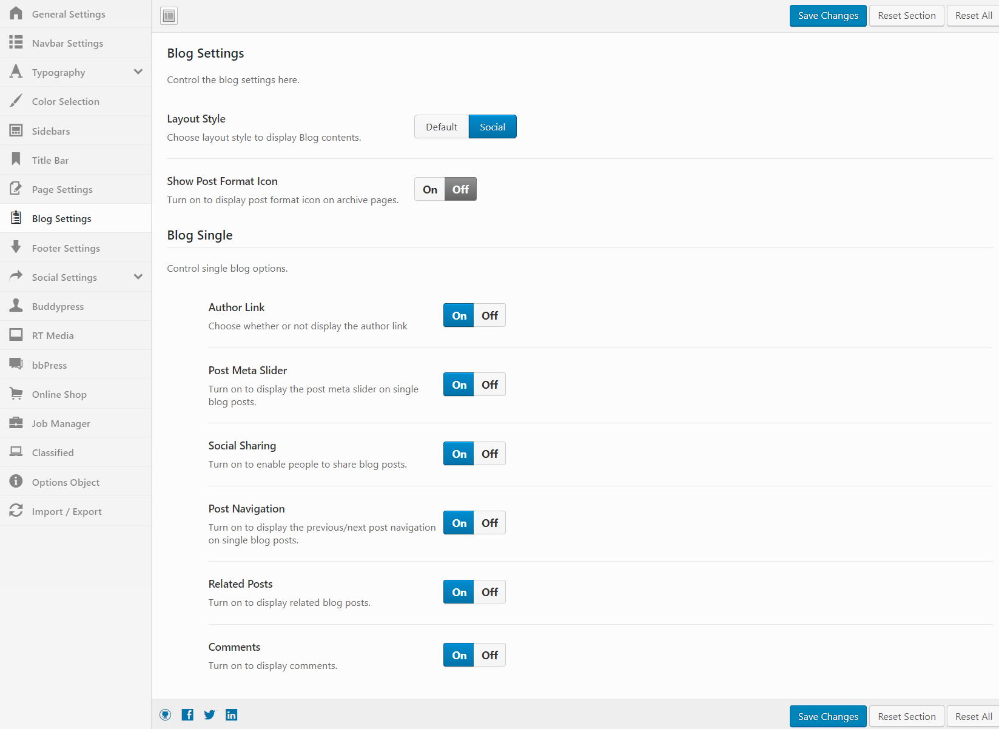
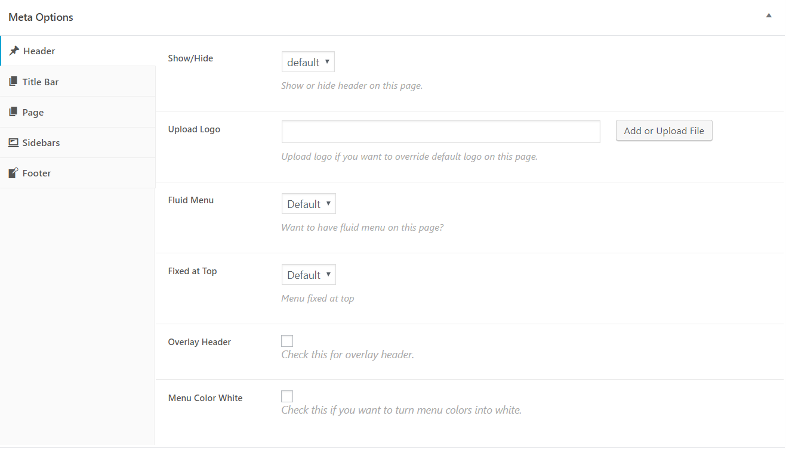

Theme Settings
Theme Options:
Redux Framework plugin must be intalled to be able to use theme options.
Global theme options are available at Dashboard > Beehive > Options.

Following options are available in our theme:
- General: find general options like uploading logos, preloader etc here.
- Navbar: customize theme header navigation in this tab.
- Typography: control theme fonts.
- Color selection: choose beautiful colors for your website.
- Sidebars: sidebar related settings can be found here.
- Title bar: title bar options.
- 404 error: change 404 page contents and graphics.
- Blog settings: control your WordPress blog in this tab.
- Footer settings: play with your footer.
- Social settings: link your company social networks and enable social sharing.
- Buddypress: Additional buddypress settings available exclusively on beehive theme.
- RTMedia: Additional rtmedia settings available exclusively on beehive theme.
- bbPress: Additional bbpress settings available exclusively on beehive theme.
- WooCommerce: Additional woocommerce settings available exclusively on beehive theme.
- Job Manager: Additional job manager settings available exclusively on beehive theme.
- WPAdverts: Additional wpadverts settings available exclusively on beehive theme.
- Redirect & Restrict: Redirect options and restrict logged-out users from accessing site contents.
Page Options
CMB 2 plugin must be intalled to be able to use page options.
Beehive page options can be found under edit post/page in WordPress admin. When you add or edit a post/page, you will find Meta Metabox box under the editor.

These options will affect only the current post/page you are editing. Available options are:
- Header: control header navigation on the page.
- Title bar: Choose whether or not display the title bar on the page.
- Page: page content options.
- Sidebars: assign a sidebar to the page.
- Footer: Control page footer.